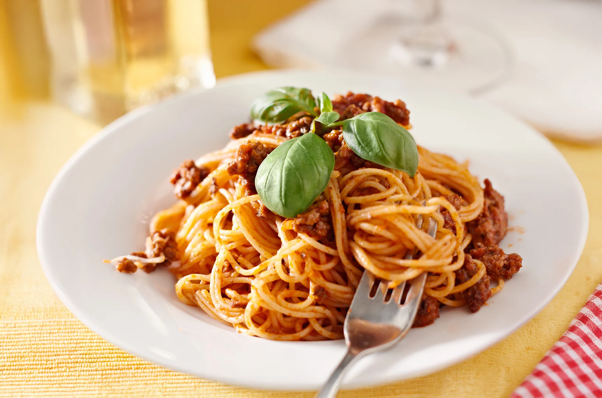

Espaguetis bolognesa

Descripcion
Popular plato de pasta combinado con una salsa espesa a base de carne picada y verduras.
Ingredientes
- 1 bote de tomate triturado
- 500g de espaguetis
- 1 cucharada de azucar
- 1/2 cebolla
- 1 diente de ajo
- 400g de carne picada
- Albahaca fresca
- Oregano
- Perejil
- Aceite de oliva virgen extra
- Sal al gusto
- Zumo de medio limon
Preparacion
- Colocar una cacerola en el fuego y calentar un chorro generoso de aceite. Cuando este listo, echamos el diente de ajo, previamente pelado y laminado, hasta que coja calor. Entonces se le echa la cebolla, bien picadita y se deja pochar.
- Cuando la cebolla haya cogido color, echamos el tomate triturado y bajamos el fuego. Pasados un par de minutos, echamos la sal y una cucharada de azucar para quitar la acidez del tomate, y un poquito de oregano y perejil. Removemos bien y dejamos que se cueza unos 15 minutos el tomate a fuego bajo.
- En un bol aparte mezclamos carne picada con zumo de medio limon, y lo aderezamos con un poquito de perejil y sal al gusto. Ponemos aceite eun una sarten y, cuando este caliente, echamos la carne en ella y la dejamos hasta que se dore pero no se haga del todo.
- Entonces echamos la carne en la salsa de tomate y dejamos que termine de hacerse a fuego lento
- Mientras, vamos cociendo los espaguetis en una cacerola con agua abundante y un poquito de sal. Cuando esten al dente, los escurrimos y los echamos en la cacerola de salsa bolognesa para que cojan todo el sabor.
- A la hora de servir se le puede echar un poco de queso parmesano rallado y, si aptece, albahaca fresca que le da un sabor buenisimo.
Home